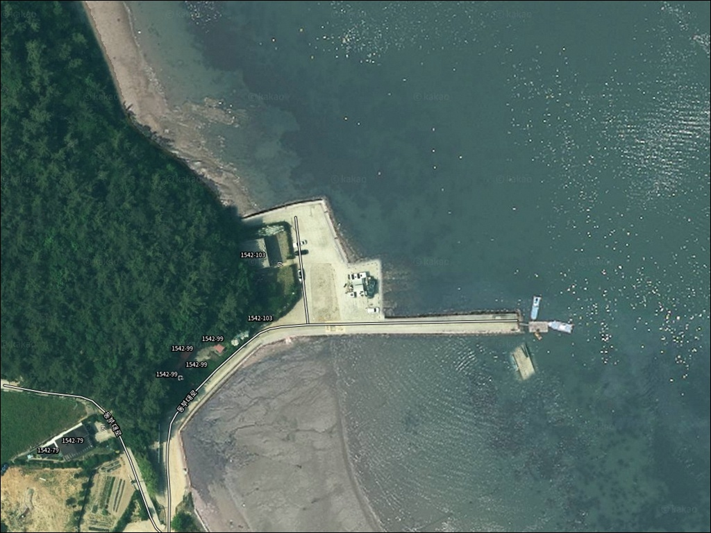
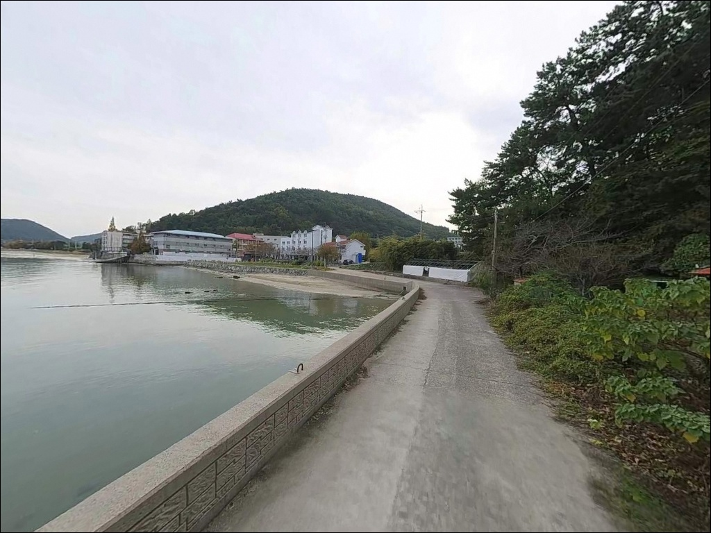
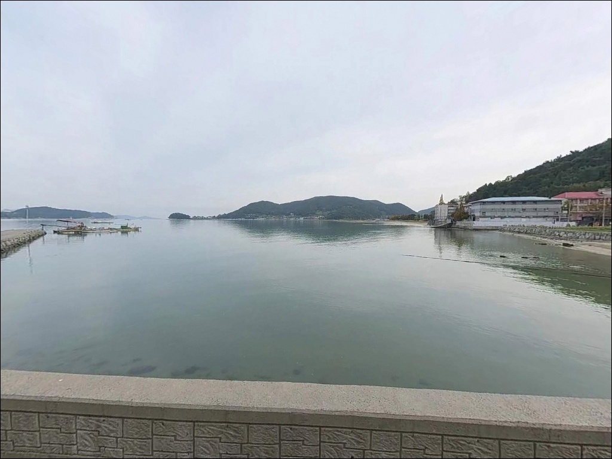
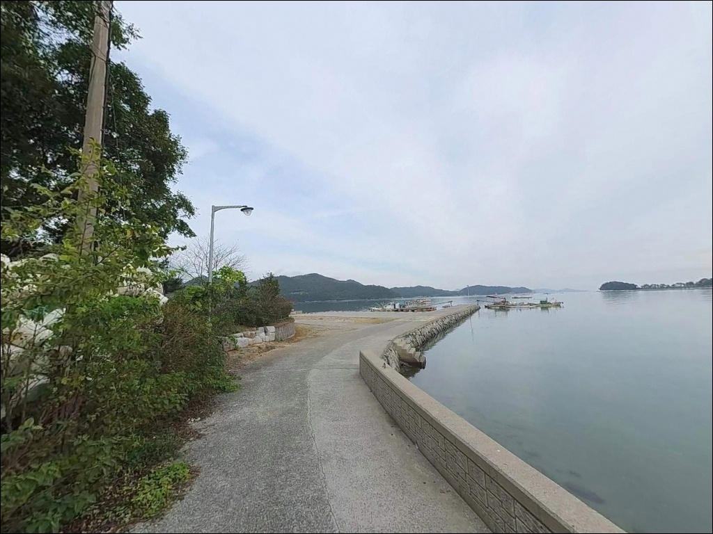
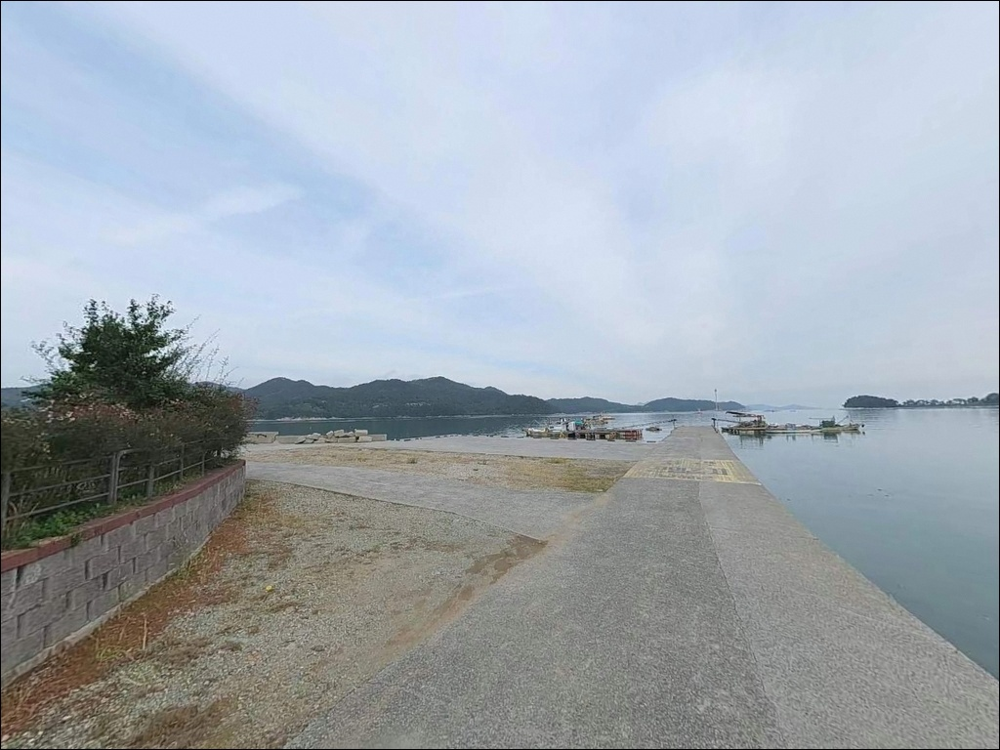
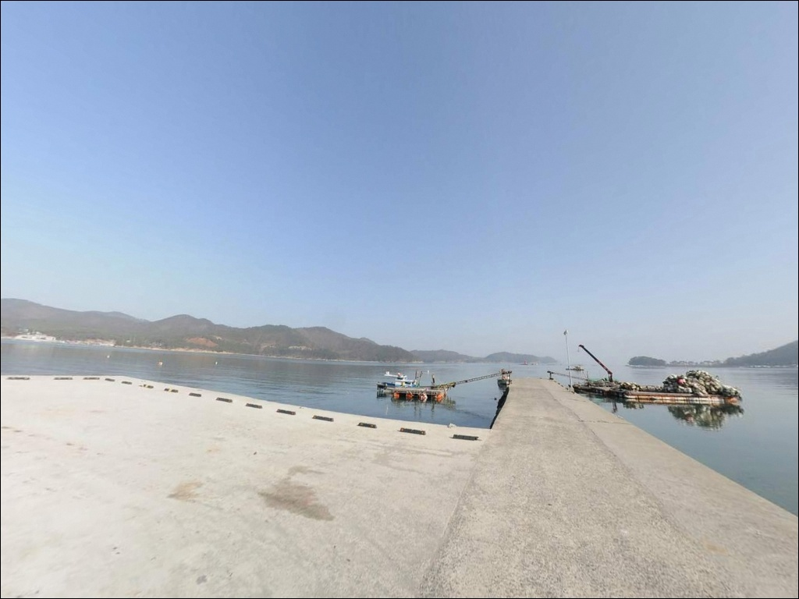
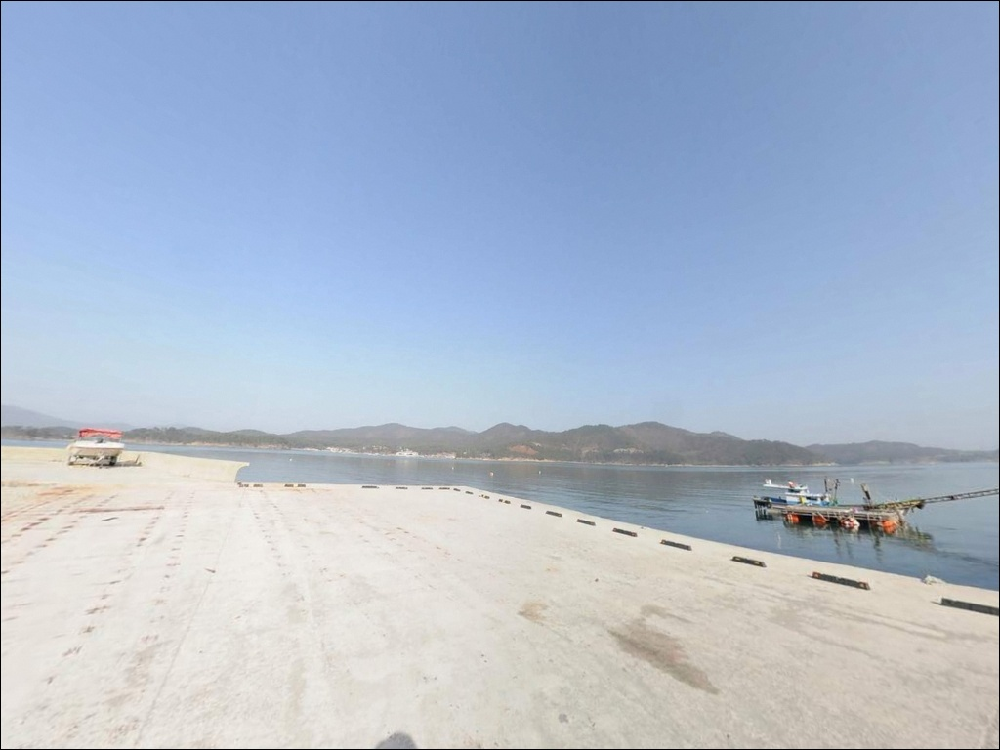
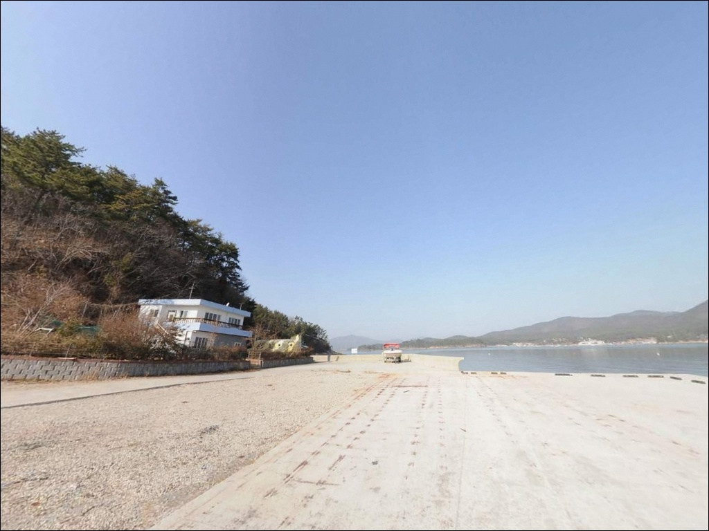
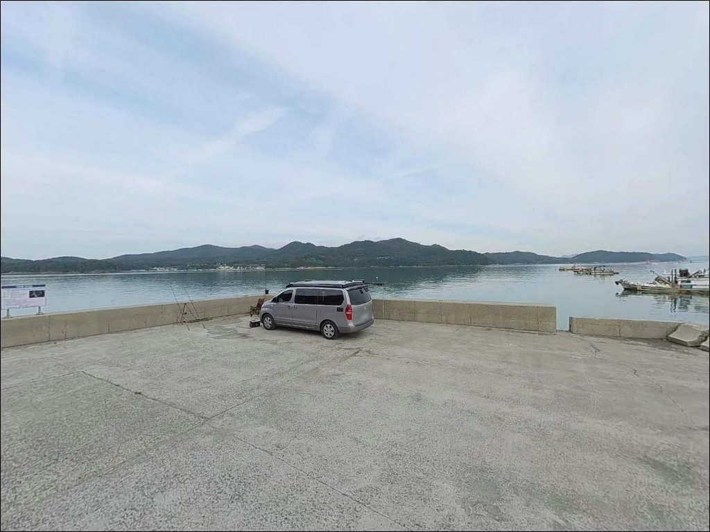

이 페이지에는 광고(제휴 링크 포함)가 있으며, 광고 링크를 통해 구매하면 운영자가 판매 수익 또는 수수료를 받을 수 있습니다. 포인트 사진: 카카오맵 스카이뷰·로드뷰. 이 페이지의 지도·사진 이미지는 카카오맵의 실제 서비스 이미지와 다를 수 있습니다.


조류에 채비 휩쓸리던 둔촌방파제 에깅, 조금 전후 34물 봉돌 올려 맞춘 바닥권
포인트 안내
둔촌방파제
경남 남해군 삼동면 금송리 142-9
사리 물때에 지족해협 방파제를
아무 준비 없이 찾아가면
어떤 채비를 써도 조류에 밀려
운용이 불가능해지는 상황을 맞닥뜨립니다.
이 방파제는 창선도와 남해도 사이
국내 연안 해협 중 조류가 가장 빠른 축에 속하는
지족해협을 정면으로 향하는 구조라,
물때 계산이 출조 성패를 가릅니다.
방파제 끝단 수심은 8~10m권,
갯바위 구간이 도보로 연결되고
여밭 지형도 곳곳에 발달해 있어
지형 조건 자체는 복수의 낚시 방식을
운용하기에 갖춰진 포인트입니다.
인근 지족리 생활권까지
3km 이내라 편의 여건도 나쁘지 않습니다.
이 글은 둔촌방파제의
진입 동선, 차박 여건, 물때 기준,
지형 기반 낚시 스타일에 집중합니다.
조황 단정이나 특정 어종 보장은
이 글의 범위에 포함되지 않습니다.

1. 진입 동선과 차량 접근 여건
둔촌방파제는 남해 동부 해안도로인
동부대로와 연결된 마을 진입로를 통해
접근하는 구조입니다.
동부대로에서 갈라지는 동부대로1503번길을 따라
마을·갯벌체험장·방파제 순서로
이어지는 동선이며,
아스팔트 포장 도로가
방파제 입구까지 연결되어 있습니다.
도로 폭은 마을 생활도로 수준이나
캠핑 차량도 무리 없이 진입할 수 있는 폭입니다.
방파제 시작점 공터가 낚시 자리와
몇 미터 거리에 위치해 있고,
대형 차량의 회차도 가능한
입구 공간이 확보되어 있습니다.
주차는 방파제 시작점 공터를 기본으로,
마을 공동 작업장 인근 벽면 공간을
보조로 활용하는 방식이 일반적입니다.
다만 갯벌체험장 이용객이 많은
성수기에는 주차 공간 경쟁이
생길 수 있으니
이른 시간 입장이 유리합니다.

2. 차박 환경과 야간 체류 여건
방파제 입구 공터에서
낚싯대를 드리운 채 하룻밤 머무는 구성은
가능한 여건입니다.
마을 안쪽과 갯벌체험장이 인접해
완전한 고립형 포인트는 아니지만,
야간에는 통행이 줄어
조용한 분위기가 형성됩니다.
마을 어귀와 항구 내에
가로등이 일부 설치되어 있어
최소한의 시야는 확보되는 편입니다.
다만 방파제 끝단으로 갈수록 어두워지므로
고광도 헤드랜턴은 필수입니다.
갯벌체험장 인접 구간 특성상
성수기 낮 시간대에는 방문객이 많아
차박지로서의 프라이버시가
평일·비수기 대비 낮아집니다.
지족해협 수로형 지형 특성상
기상에 따라 해협을 통과하는
바람의 세기가 강해질 수 있습니다.
차박 체류 전날 기상청 예보를 통해
풍향과 파고를 반드시 확인하고
출발 여부를 결정하는 편이 안전합니다.


3. 주변 편의시설 및 인프라 현황
방파제에서 차량으로 약 3km 이내에
지족리 중심가가 연결됩니다.
이 구간에 식당, 편의점, 낚시점,
농협 하나로마트가 집중되어 있어
소모품 보충과 식사 해결이
당일 이동 범위 안에서 가능합니다.
GS25 남해독일마을점은 10km 권내에서
24시간 운영이 확인됩니다.
방파제 인근 둔촌갯벌체험장은
마을에서 운영하는 유료 체험 시설로,
3월부터 11월 말까지 갯벌 체험이 운영됩니다.
체험장 운영 시간대에는
가족 단위 방문객이 많아지므로
낚시 자리 선정 시
동선 분리를 감안하는 편이 낫습니다.
삼동면 소재지에는 보건지소와 약국이 위치합니다.
응급 상황 발생 시 이동 경로를
출발 전에 미리 확인해 두는 것이
기본 준비에 해당합니다.

4. 방문 전 반드시 챙겨야 할 준비사항
둔촌방파제 방문에서
가장 먼저 확인해야 할 것은 물때입니다.
지족해협은 사리 전후에
방파제 상단까지 바닷물이 튀어 오를 만큼
조류가 강해지는 해협입니다.
바다타임에서 삼동면 기준 물때를 확인하고
조금 전후 3~4물 구간을 기준으로
출발 시각을 설정하는 것이 기본 전략입니다.
채비는 강한 조류를 버틸 수 있도록
봉돌 무게를 평소보다 올려 준비합니다.
갯바위 구간 여밭 지형 특성상
밑걸림으로 인한 채비 손실이
잦을 수 있으니
여분 채비를 넉넉히 준비하는 편이 좋습니다.
기상청 해상 예보도 당일 아침
한 번 더 확인하고 출발하는 것이
포인트 낭비를 막는 조건입니다.
방파제 끝단은 사리 물때에 파도가
상단까지 올라올 수 있습니다.
구명조끼는 착용 필수이며,
야간에는 헤드랜턴과 반사 조끼를 갖추고
방파제 발판 상태를 먼저 확인한 뒤
끝단 진입 여부를 결정해야 합니다.

5. 지족해협 방파제가 만드는 낚시 지형 구조
둔촌방파제의 핵심은
지족해협 수로를 정면으로 향하는
방파제 끝단 구조입니다.
방파제 전면은 해협의 빠른 조류가
직접 흐르는 구간으로,
간조 시에도 4~6m 수심을 유지하며
끝단 쪽으로 갈수록
8~10m권까지 수심이 깊어집니다.
방파제에서 도보로 연결되는
갯바위 구간이 포인트의 또 다른 자산입니다.
선착장 모서리 방향으로는
여밭이 발달해 있어
바닥 지형이 복잡한 만큼
밑걸림을 감수하고 공략해야 하는
구간이기도 합니다.
바닥은 사질과 수중여가
혼재된 복합형 지형입니다.
조류가 흐르는 방향이
낚시 자리 선택의 기준이 됩니다.
방파제 외항 쪽은 해협 조류의 영향을
직접 받아 회유성 어종이
길목으로 사용하는 구간이며,
내항 쪽은 완만한 수면이 형성돼
찌낚시나 가벼운 채비 운용에
적합한 구조입니다.
출조 전 지족해협 일대 최신 조황은
꼭 검색해 보시기 바랍니다.


6. 포인트에 어울리는 낚시 스타일
조류 속도와 수심을 감안하면
이 포인트에서 가장 먼저 시도해 볼 낚시는
에깅입니다.
지족해협의 빠른 조류와
방파제 끝단의 깊은 수심은
갑오징어 에깅 채비가 힘을 쓸 수 있는
지형 조건을 갖추고 있습니다.
조류가 강한 시간대에는
봉돌을 무겁게 올려
바닥권을 안정적으로 유지하는 운용이
필수적입니다.
루어낚시도 이 포인트 구조에 잘 맞습니다.
방파제에 가로등이 일부 설치되어 있어
야간 집어 효과가 형성되는 편이며,
해질녘부터 볼락과 농어 반응을
기대해 볼 수 있습니다.
조류가 흐르는 방향에 맞춰
가벼운 지그헤드를 흘리는 기법이
이 포인트에서 효과적입니다.
찌낚시는 조금 전후
들물과 날물이 교차하는 정조 타이밍에
집중하는 방식이 어울립니다.
외항 방향으로 조류를 태운
전유동 채비 운용이 가능하며,
방파제 내항 쪽에서는
잔잔한 수면 여건을 이용한
근거리 찌낚시 구성도 가능합니다.
원투낚시는 펄·모래 혼합 저질 구간을
겨냥해 근거리 탐색형으로 운용하는 것이
바닥 여건에 맞습니다.

7. 대안 포인트와 플랜 B 동선
둔촌방파제 조류가 너무 강하거나
갯벌체험장 방문객으로 인해
주차 여건이 여의치 않을 때는
지족방파제가 첫 번째 대안입니다.
약 2.5km 거리에 위치하며
규모가 더 크고 수심이 깊어
본격적인 대물 낚시 여건을
갖춘 포인트입니다.
삼동면 동쪽으로 이동하면
노루목방파제와 전도방파제가 있습니다.
금송리 해안 라인 상에 위치한
인접 방파제들로
조류·수심 패턴이 유사하며,
둔촌방파제와 묶어
동선 계획을 세우기 좋은 구간입니다.
차량으로 약 8km 이동하면
남해도 동부의 대표 방파제인
물건방파제에 닿습니다.
북파제 450m, 남파제 320m 규모에
수심 18~23m의 깊은 지형을 갖추고 있어
둔촌방파제 조건이 맞지 않는 날
본격 공략지로 이동하는 대안입니다.
물건항 주차장은 인프라와
주차 공간이 쾌적한 차박지이기도 합니다.

물때 맞추면 달라지는
지족해협 방파제 낚시
릴찌낚시나 에깅, 루어낚시를
두루 즐기는 낚시인이라면
둔촌방파제의 지형 조건은
방식을 바꿔가며 공략하기에
잘 맞는 구조입니다.
방파제 끝단의 깊은 수심,
도보로 연결되는 갯바위 구간,
여밭 지형이 함께 어우러진
복합형 포인트입니다.
반면 물때 계산 없이 사리 전후에 찾아가거나,
성수기 갯벌체험장 방문객 동선과
겹치는 시간대에 입장하면
낚시 여건과 주차 여건 모두
기대에 못 미칠 수 있습니다.
물때 확인, 채비 준비, 진입 시간 설정
이 세 가지를 갖추고 간다면
지족해협의 조류 흐름을 활용한
기억에 남는 출조가 될 수 있는 곳입니다.
조류가 살아 있는 물때를 골라
방파제 끝단에 자리를 잡고
차에서 하룻밤 머무는 낚시 여행자라면,
지족해협의 강한 흐름이 오히려
이 포인트의 매력이 됩니다.